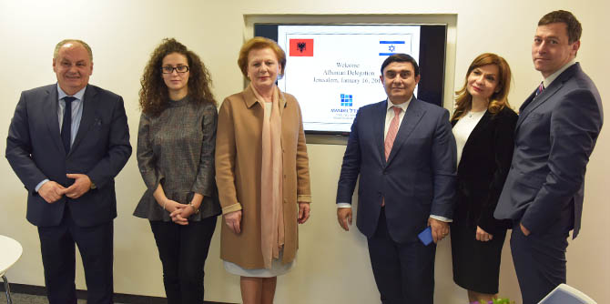

את המפגש, שנערך ב-16.1.17, יזם דן אוריין, שגריר ישראל למקדוניה ומנהל מחלקת הבלקן במשרד החוץ הישראלי. מטרת המפגש הייתה לסייע לאלבניה, שעדיין חסרה תכנית מנהיגות, לקדם את הנושא באמצעות למידה משותפת של מודלים שונים של מנהיגות מקרן מנדל-ישראל והתוודעות לפעילותה. את המפגש הובילה מנהלת יחידת בוגרי מנדל, ד"ר גרניט אלמוג-ברקת.
חברי המשלחת האלבנית התעניינו בתפיסות של פיתוח מנהיגות בכלל ומנהיגות חינוכית בפרט. הם סיפרו שהמדינה מייחסת חשיבות רבה לתחום החינוך בעידן הפוסט קומוניסטי, ושכחלק מהרצון לפתח ולהתפתח, צעירים אלבנים רבים לומדים באוניברסיטאות הטובות בעולם. חבר הפרלמנט Anastas Anglieli, לשעבר שר האוצר ושר הכלכלה ונגיד בנק אלבניה, התעניין במיוחד בנתונים על בוגרי מנדל – באילו משרות הם מחזיקים, כמה מהם פועלים בתחומי החינוך והחברה ועוד.
ד"ר אלמוג-ברקת הציגה לאורחים את החזון של קרן מנדל בכלל ושל יחידת בוגרי מנדל בפרט. דני בר גיורא, מנהל בית ספר מנדל למנהיגות חינוכית, סיפר על בית הספר תוך סיור שנערך במקום. רקפת מוסק, מנהלת הייעוצים ביחידת הבוגרים, סיפרה על התכניות שיחידת הבוגרים מפתחת עם הבוגרים ועבורם.
סגנית יו"ר הפרלמנט האלבני Valentina Leskaj סיפרה על האתגרים שאלבניה עומדת בפניהם. היא הביעה עניין רב במודל המנהיגות החינוכית של קרן מנדל-ישראל וציינה כי אף שבמנדל לומדים אך ורק ישראלים, היא מקווה שתימצא הדרך ליצירת שיתוף פעולה וחילופי ידע.
פרופ' פייר קלץ, מנהל תכנית מנדל MBA במנהיגות חברתית באוניברסיטת בן גוריון, סיפר על התפיסה הייחודית של התכנית, שמטרתה לקדם מנהיגים לארגוני החברה האזרחית והיא משלבת הקניית ידע וכלים בפיתוח ובהובלת יוזמות חברתיות יחד עם ידע וכלים בניהול עסקי.
ד"ר סמירה עליאן, מרצה באוניברסיטה העברית ובמכללת דוד ילין, בוגרת מחזור י' של בית ספר מנדל למנהיגות חינוכית, ומירי ונד, לשעבר מנהלת גף מוסדות חינוך באגף לחינוך על יסודי במינהל הפדגוגי ובוגרת מחזור ג', סיפרו לנוכחים על המשמעות של הלימודים במנדל עבורן, על תרומתם של הלימודים במנדל לקריירה שלהן ועל חשיבות הקשר עם יחידת הבוגרים.

{kind=link}